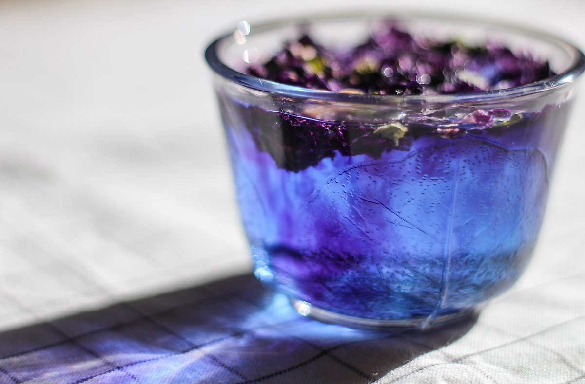
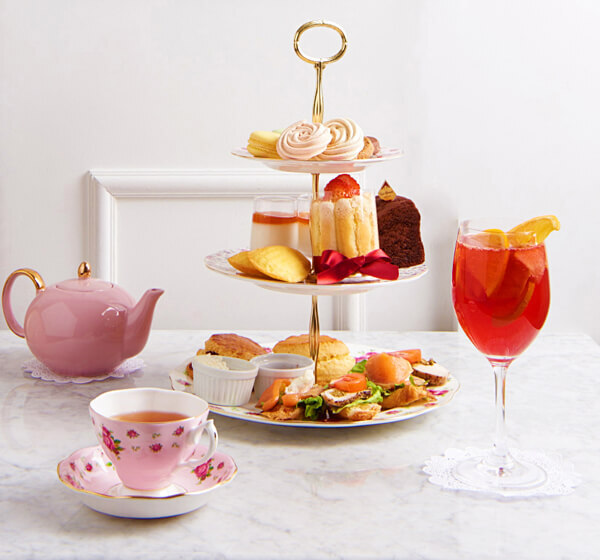
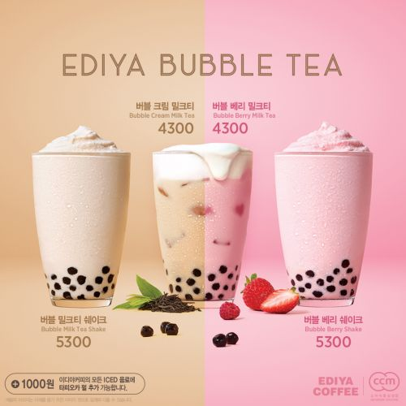
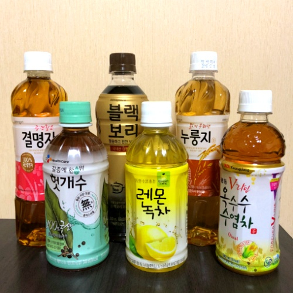

MB-Tea-I를 해보자!
**재미를 위해 엄격한 의미에서의 차뿐만 아니라 넓은 의미에서의 차를 포함하고 있습니다!**
블루멜로우

모험심이 강하고 아름다움을 추구하며 귀찮음을 마다하지 않는 당신에게 어울릴 것 같아요.
레몬즙을 떨어뜨려보세요!
수공예 꽃차

간단하게 꽃봉오리 차를 넣어놓고 신기함과 아름다움을 음미하세요!
투명한 찻주전자는 필수!
말차
제조하기는 까다롭지만 도전할만한 가치가 있는 고급스러운 맛!
이슬차(수국 잎차)
수수하고 간단한 차지만, 맛은 예상 밖!
설탕을 넣지도 않았는데 단맛이!
애프터눈 티세트

비싸지만 아름답고 품격있는 티타임이 될 것은 확실하네요!
버블밀크티

카페에서 흔한 메뉴지만 반짝이는 타피오카 펄들이 아름다워요.
티백이 아닌 잎홍차
티백이 아닌 잎홍차를 우려먹어보아요. 스스로를 정성스레 대접해주는 기분일거예요.
편의점 차

흔하지만 언제든지 즐길 수 있는 매력이 있어요!
잘 찾아보면 맛있는 메뉴가 많답니다.